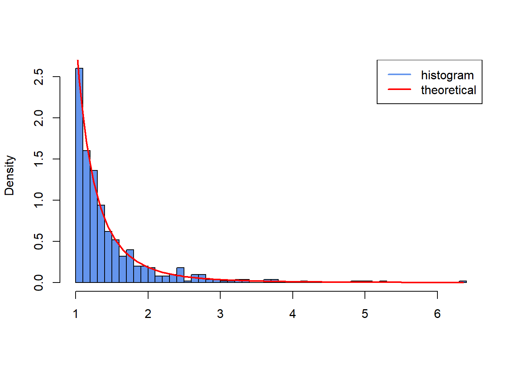

25 Retake exam 2023
25.1 Problem 1:
Begin by setting the seed to 134.
- The density function of the Pareto distribution is given as \[ f(X) = \begin{cases} \frac{\alpha \gamma^\alpha}{X^{\alpha+1}}, & \text{if } X \ge \gamma, \\ 0, & \text{if } X < \gamma, \end{cases} \] where \(\gamma > 0\) and \(\alpha > 0\) are the parameters. Write a function
fn_denParetothat returns the value \(f(X)\) for any \(X\) given the parameters \(\gamma\) and \(\alpha\).
Solution:
- Use the inversion method to simulate data with Pareto distribution with the parameters values \(\gamma = 1\) and \(\alpha = 3\). The inverse CDF is given as \[ F^{-1}(U) = \gamma (1-U)^{-\frac{1}{\alpha}}, \] where \(U\) is a standard uniform random variable. We wish to simulate \(N=100\) samples of length \(T=500\) each.
- Write a function
fn_ParetoSimul, which simulates and returns these samples in the \(T \times N\) matrixmXas output. - Simulate
mXand create a histogram of its first column. Superimpose the theoretical density defined in question 1. in red usinglines().
- Write a function
Solution:
fn_ParetoSimul <- function(gamma, alpha, samples, length) {
U <- runif(samples * length)
vSim <- gamma * (1 - U)^(-1/alpha)
return(matrix(vSim, nrow = length, ncol= samples))
}
mX <- fn_ParetoSimul(gamma = 1, alpha = 3, samples = 100, length = 500)
hist(mX[, 1],
freq = FALSE,
breaks = 41,
col = "cornflowerblue",
xlab = "",
ylab = "Density",
main = "",
xlim = c(min(mX[, 1]), max(mX[, 1])))
vX <- seq(min(mX[, 1]), max(mX[, 1]), by = 0.05)
lines(vX, fn_denPareto(vX, 1, 3), type = "l", col = "red", lwd = 2)
legend("topright",
legend = c("histogram", "theoretical"),
col = c("cornflowerblue", "red"),
lwd = 2) 
- The maximum likelihood estimates of the parameters based on a sample \(X_1, \dots, X_T\) are given by \[ \hat{\gamma} = \min(X_t) \] \[ \hat{\alpha} = \frac{T}{\sum_{t=1}^T \ln(X_t/\hat{\gamma})} \] Write a function
fn_estimateParams, which estimates \(\hat{\gamma}\) and \(\hat{\alpha}\) for each column inmX. Save the resulting 100 estimates of \(\hat{\alpha}\) in a vectorvAlpha.
Solution:
- Create a histogram of the estimates \(\hat{\alpha}\) contained in the vector
vAlpha. Let the title of the plot be “Distribution of estimates” and set the label on the x-axis to “Estimates”.
Solution:
25.2 Problem 2: (Constrained) Optimization, C++, and Packaging
Note: This problem is best solved in order from 1 - 6.
In this problem, you will work with the Y.R file provided with the exam. It contains data which you will use to estimate an autoregressive model by maximum likelihood. The model is as follows: \[ y_t = \mu + \phi y_{t-1} + \epsilon_t, \quad \epsilon_t \stackrel{iid}{\sim} N(0, \sigma^2), \quad t=2,\dots,T, \quad \quad (2.1) \] with initial value \(y_1 \sim N\left(\frac{\mu}{1-\phi}, \frac{\sigma^2}{1-\phi^2}\right)\) and sample size \(T=500\). Naturally \(\sigma^2 > 0\), and since we’re only interested in stationary models \(-1 < \phi < 1\). For convenience, we stack the parameters into the vector \(\boldsymbol{\theta} = (\mu, \phi, \sigma^2)'\). Under this model, the joint pdf of the data is \[ f_{Y_1,\dots,Y_T}(\mathbf{y} | \boldsymbol{\theta}) = f_{Y_1}(y_1 | \boldsymbol{\theta}) \prod_{t=2}^T f_{Y_t|Y_{t-1}}(y_t|y_{t-1}, \boldsymbol{\theta}). \] where \[ f_{Y_1}(y_1|\boldsymbol{\theta}) = \frac{1}{\sqrt{2\pi\sigma^2/(1-\phi^2)}} \exp\left(-\frac{1}{2} \frac{[y_1 - \mu/(1-\phi)]^2}{\sigma^2/(1-\phi^2)}\right), \] \[ f_{Y_t|Y_{t-1}}(y_t|y_{t-1}, \boldsymbol{\theta}) = \frac{1}{\sqrt{2\pi\sigma^2}} \exp\left(-\frac{1}{2} \frac{[y_t - \mu - \phi y_{t-1}]^2}{\sigma^2}\right). \]
- Load the data file
Y.Rinto your R workspace usingreadRDS(). It contains the variables \(y_t\) stacked in a vector.
Solution:
set.seed(123)
genData <- function() {
mu_true <- 0.5
phi_true <- 0.7
sigma2_true <- 1.5
T_val <- 500
# Ensure parameters meet conditions
if (abs(phi_true) >= 1) {
stop("phi must be between -1 and 1 for stationarity.")
}
if (sigma2_true <= 0) {
stop("sigma2 must be positive.")
}
# Initialize the time series vector
y <- numeric(T_val)
# 1. Generate y_1 from its stationary distribution
# y_1 ~ N(mu / (1 - phi), sigma^2 / (1 - phi^2))
mean_y1 <- mu_true / (1 - phi_true)
var_y1 <- sigma2_true / (1 - phi_true^2)
sd_y1 <- sqrt(var_y1)
y[1] <- rnorm(1, mean = mean_y1, sd = sd_y1)
# 2. Generate y_t for t = 2, ..., T
# y_t = mu + phi * y_{t-1} + epsilon_t, epsilon_t ~ N(0, sigma^2)
sd_epsilon <- sqrt(sigma2_true)
for (t in 2:T_val) {
epsilon_t <- rnorm(1, mean = 0, sd = sd_epsilon)
y[t] <- mu_true + phi_true * y[t-1] + epsilon_t
}
return(y)
}
y <- genData()- Create a C++ script, and write two C++ functions called
f_Y1andf_condwhich compute \(f_{Y_1}(y_1|\boldsymbol{\theta})\) and \(f_{Y_t|Y_{t-1}}(y_t|y_{t-1}, \boldsymbol{\theta})\) respectively. In your R script, include asourceCpp()command which compiles the C++ script and adds these functions to your environment.
You want to find the maximum likelihood estimator of \(\boldsymbol{\theta}\), using the average log-likelihood function: \[ \ell(\boldsymbol{\theta}|\mathbf{y}) = \frac{1}{T} \left( \ln f_{Y_1}(y_1|\boldsymbol{\theta}) + \sum_{t=2}^T \ln f_{Y_t|Y_{t-1}}(y_t|y_{t-1}, \boldsymbol{\theta}) \right) \]
Solution:
// [[Rcpp::depends(RcppArmadillo)]]
#include <RcppArmadillo.h>
using namespace arma;
using namespace Rcpp;
// [[Rcpp::export]]
double f_Y1(double y1, vec vParams) {
double dPi = atan(1)*4;
double dMu = vParams[0];
double dPhi = vParams[1];
double dSigma2 = vParams[2];
double dOut = 1 / pow(2 * dPi * dSigma2 / (1 - pow(dPhi, 2)), 0.5) * exp(-0.5 * pow((y1 - dMu / (1 - dPhi)), 2) / (dSigma2 / (1 - dPhi)));
return dOut;
}
// [[Rcpp::export]]
double f_cond(double y1, double yt_1, vec vParams) {
double dPi = atan(1)*4;
double dMu = vParams[0];
double dPhi = vParams[1];
double dSigma2 = vParams[2];
double dOut = 1 / pow(2 * dPi * dSigma2, 0.5) * exp(-0.5 * pow((y1 - dMu - dPhi * yt_1), 2) / dSigma2);
return dOut;
}suppressMessages(library(Rcpp))
#> Warning: pakke 'Rcpp' blev bygget under R version 4.3.3
suppressMessages(library(RcppArmadillo))
#> Warning: pakke 'RcppArmadillo' blev bygget under R version 4.3.3
sourceCpp("exam2023recpp.cpp")- Write an R function called
fLnL_repwhich computes the reparametrized average log-likelihood, such that the restrictions \(\sigma^2 > 0\) and \(-1 < \phi < 1\) are satisfied. The function should accept a vector \(\boldsymbol{\theta}\) and the data \(\mathbf{y}\). It should also appropriately transform \(\boldsymbol{\theta}\) into \(\tilde{\boldsymbol{\theta}}\) which respects the restrictions. It should also use your functionsf_Y1andf_condto compute \(\ell(\boldsymbol{\theta}|\mathbf{y})\). Remark: If you cannot fully solve question 2., you can earn partial points by implementing the functionsf_Y1andf_condin R.
Solution:
fLnL_rep <- function(vParams, vY) {
dMu <- vParams[1]
dPhi <- -1 + 2 * (exp(vParams[2]) / (1 + exp(vParams[2])))
dSigma2 <- exp(vParams[3])
dT <- length(vY)
dSum <- log(f_Y1(vY[1], c(dMu, dPhi, dSigma2)))
for (t in 2:dT) {
dSum <- dSum + log(f_cond(vY[t], vY[t - 1], c(dMu, dPhi, dSigma2)))
}
return(dSum / dT)
}- Maximize the reparametrized average log-likelihood with the BFGS algorithm, using the
optim()function. You may use \(\boldsymbol{\theta}_0 = (0,0,1)\) as the initial guess. Report the maximum likelihood estimator of \(\boldsymbol{\theta}\) and the average log-likelihood evaluated at that point. Hint: Due to the reparameterization, you may need to transform the solution again to obtain \(\boldsymbol{\theta}\).
Solution:
vParams <- c(0, 0, 1)
vParams[2] <- log(((vParams[2] + 1) / 2) / (1 - ((vParams[2] + 1) / 2.0)))
vParams[3] <- log(vParams[3])
optim_res <- optim(vParams, fLnL_rep, vY = y, method = "BFGS", control=list(fnscale=-1))
vParams <- optim_res$par
dMu <- vParams[1]
dPhi <- -1 + 2 * (exp(vParams[2]) / (1 + exp(vParams[2])))
dSigma2 <- exp(vParams[3])
print(paste0("Est. Mu: ", dMu, " vs act.: ", 0.5))
#> [1] "Est. Mu: 0.67406977684722 vs act.: 0.5"
print(paste0("Est. Phi: ", dPhi, " vs act.: ", 0.7))
#> [1] "Est. Phi: 0.62648860056871 vs act.: 0.7"
print(paste0("Est. Sigma2: ", dSigma2, " vs act.: ", 1.5))
#> [1] "Est. Sigma2: 1.40416059123645 vs act.: 1.5"
print(paste0("Maximized average log-likelihood: ", optim_res$value))
#> [1] "Maximized average log-likelihood: -1.58915508954246"- The file
simulateAR1_buggy.cppcontains a C++ function using Rcpp and RcppArmadillo. The code contains multiple errors. Debug the function. Add a short comment before each line where you have made changes. The function should simulate an AR(1) process as in Equation (2.1), with user-provided arguments for \(\mu, \phi, \sigma^2\) and \(T\). It should check whether these arguments satisfy the restrictions \(\sigma^2 > 0\) and \(-1 < \phi < 1\), and provide an informative error message if not. It should return the simulated time series as a vector.
Solution:
arma::vec simulateAR1_buggy(double mu_true = 0.5, double phi_true = 0.7, double sigma2_true = 1.5, double T_val = 500) {
if (abs(phi_true) >= 1) {
stop("phi must be between -1 and 1 for stationarity.");
}
if (sigma2_true <= 0) {
stop("sigma2 must be positive.");
}
arma::vec y = zeros<vec>(T_val);
double mean_y1 = mu_true / (1 - phi_true);
double var_y1 = sigma2_true / (1 - pow(phi_true, 2));
double sd_y1 = sqrt(var_y1);
y[0] = Rf_rnorm(mean_y1, sd_y1);
double sd_epsilon = sqrt(sigma2_true);
double epsilon_t = 0.0;
for (int t = 1; t < T_val; t++) {
epsilon_t = Rf_rnorm(0, sd_epsilon);
y[t] = mu_true + phi_true * y[t-1] + epsilon_t;
}
return(y);
}suppressMessages(library(Rcpp))
suppressMessages(library(RcppArmadillo))
sourceCpp("exam2023recpp.cpp")
vY <- simulateAR1_buggy(0.5, 0.7, 1.5, 500)And just for fun:
vParams <- c(0, 0, 1)
vParams[2] <- log(((vParams[2] + 1) / 2) / (1 - ((vParams[2] + 1) / 2.0)))
vParams[3] <- log(vParams[3])
optim_res <- optim(vParams, fLnL_rep, vY = vY, method = "BFGS", control=list(fnscale=-1))
vParams <- optim_res$par
dMu <- vParams[1]
dPhi <- -1 + 2 * (exp(vParams[2]) / (1 + exp(vParams[2])))
dSigma2 <- exp(vParams[3])
print(paste0("Est. Mu: ", dMu, " vs act.: ", 0.5))
#> [1] "Est. Mu: 0.50608151243852 vs act.: 0.5"
print(paste0("Est. Phi: ", dPhi, " vs act.: ", 0.7))
#> [1] "Est. Phi: 0.694273961540576 vs act.: 0.7"
print(paste0("Est. Sigma2: ", dSigma2, " vs act.: ", 1.5))
#> [1] "Est. Sigma2: 1.52925097542527 vs act.: 1.5"- Create an R package that contains the functions from questions 2., 3. and 5., and edit the title description to “This is my exam package”. Export the package as a bundled development version (with file extension
.tar.gz), and include it as part of your exam submission. Remark: If you cannot solve 2., 3. or 5., create a package that contains an R and a C++ function with single scalar inputs that always return the number 42.